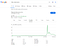

The Voice Controlled Stock market

Still was writing the article about the bubble of Gamestop when this Title came to my mind when I was discovering this bubble

of course, this proves that the underlying story and persons involved are the facts that caused these bubbles. There is no relation between Signal app and the stock of Signal Advance and this also shows that a lot of individual investors know almost nothing about the stock markets. They cannot even distinguish the sticker of a stock. How will we live in a world with stock markets that are voice-controlled by stars like Elon musk? When a stock price bubble when someone tweet do we have efficient markets?
It started with influence marketing, Now it is Influence investing.
Still writing this article about the anatomy of a stock bubble caused by social media like this experiment I did with CHK.